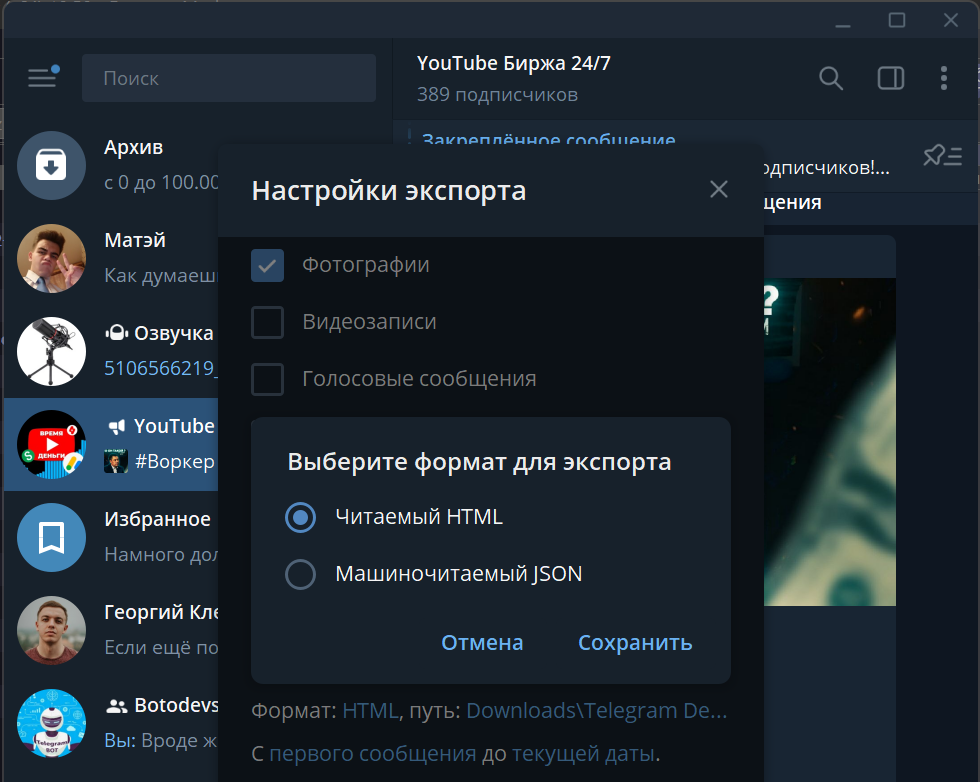

0x42
Форумчанин
- Регистрация
- 05.05.2025
- Сообщения
- 198
- Реакции
- 137
Вот в этой статье:Заметка - Как пробить пользователя Telegram
Была отсылка на приватную статью с Хакера:Парсим телегу. Как собирать имена участников чатов в Telegram
Решил перепостить, в целом интересно...)
Как известно, в «Телеграме» есть чаты и каналы, куда, бывает, набивается множество пользователей. Иногда весьма полезно иметь их список, например для каких‑то рассылок и приглашений.
Обычно под словом «парсинг» в контексте телеги понимается именно получение списка пользователей канала или чата. Реже — получение еще и списка сообщений.
Получить список подписчиков канала без привязанного к нему чата с комментариями можно, только если это твой канал и у него меньше 200 подписчиков. Если хотя бы одно из этих условий не выполняется, парсинг недоступен чисто технически и никто не сможет его провести, что бы тебе ни обещали. Возможно, в будущем появятся какие‑то новые способы — легальные или с использованием дыр, но пока рабочих способов нет.
Если же чат с комментариями существует, то спарсить пользователей ты можешь точно так же, как в случае с любым другим чатом.
Что касается списка сообщений в канале, то его можно получить как программно, через API «Телеграма», так и вручную, экспортировав список сообщений с помощью штатного клиента.
В Telethon есть функция GetParticipantsRequest, которая получает на вход некую сущность (entity), а на выходе выдает список пользователей.
Давай попробуем скормить ей какой‑нибудь чат.
И посмотрим, что можно получить с помощью этой функции:
Чаще всего требуются поля id, username, first_name и last_name, phone. Кроме того, здесь еще и куча признаков: bot, verified, scam, fake, photo, status и другие.
Как видишь, информация самая разная. Некоторые специалисты по парсингу Telegram при этом умудряются заявлять, что им удалось получить только ID, а юзернеймы с телефонами — за отдельные деньги. Ловко, ничего не скажешь!
Телефоны, конечно, в этом списке будут отображаться только в том случае, если пользователь в настройках не отключил показ телефона всем.
Кстати, иногда предлагают определять еще и пол пользователя. Таких данных Telegram не предоставляет и не имеет. Мне известно только два способа получать эту информацию:
Внимательно присмотревшись к результату работы GetParticipantsRequest, мы увидим, что независимо от числа участников чата и от параметра limit нам выдают максимум 200 пользователей. Когда в группе меньше 200 участников, этого достаточно, но если их больше, то придется еще поднапрячься.
Мои эксперименты с параметром offset показали, что он нужен, чтобы указывать смещение в списке пользователей. По умолчанию это смещение равно нулю, но если организовать цикл, на каждой итерации которого увеличивать offset, то будет скачиваться по 200 юзеров и можно парсить до бесконечности (ну или пока не закончатся все юзеры). Например, так:
Однако довольно быстро выясняется, что функция GetParticipantsRequest возвращает максимум 10 тысяч юзеров. Как увеличить этот лимит, выяснить пока не удалось. Есть мнение, что это невозможно.
Параметр filter позволяет задать критерии, которым должны соответствовать возвращаемые результаты.
Есть следующие варианты:
Нас больше всего должен заинтересовать параметр ChannelParticipantsSearch, позволяющий искать пользователей по юзернейму или его части. Давай попробуем замутить цикл:
Поясняю: мы взяли весь алфавит и перебрали буквы, пытаясь найти юзеров, в user_name которых она есть.
Смотрим, что получилось:

Как видно, иногда список результатов содержит меньше 10 тысяч, и тогда мы можем вытащить его полностью, иногда — больше, и тогда мы опять получим только первые 10 тысяч. Однако тест на группе со 190 тысячами юзеров позволил узнать данные о 140 тысячах, а это уже немало!
Наверняка существуют и другие способы поиграть с фильтрами и вытащить еще больше людей из чата. Пусть это будет тебе домашним заданием.
Обрати внимание: этот способ работает намного дольше, и парсинг группы с несколькими десятками юзеров может занимать до нескольких десятков минут.
Сохранять результаты я рекомендую не в текстовый файл, а в какую‑нибудь базу данных, например SQLite:
Так сразу отсеиваются дубликаты, и потом будет намного удобнее работать с полученными данными: искать, сортировать, конвертировать.
Если вдруг знаешь еще какие‑то интересные трюки по этой теме, не забудь поделиться в комментариях!
Была отсылка на приватную статью с Хакера:Парсим телегу. Как собирать имена участников чатов в Telegram
Решил перепостить, в целом интересно...)
Как известно, в «Телеграме» есть чаты и каналы, куда, бывает, набивается множество пользователей. Иногда весьма полезно иметь их список, например для каких‑то рассылок и приглашений.
Обычно под словом «парсинг» в контексте телеги понимается именно получение списка пользователей канала или чата. Реже — получение еще и списка сообщений.
Каналы
Начнем с каналов. Канал — это некий ресурс в «Телеграме», где юзеры только читают сообщения владельца канала. Сами они ничего писать не могут за исключением тех случаев, когда к каналу привязан чат для комментариев. Тогда у подписчиков появляется возможность комментировать сообщения владельца.Получить список подписчиков канала без привязанного к нему чата с комментариями можно, только если это твой канал и у него меньше 200 подписчиков. Если хотя бы одно из этих условий не выполняется, парсинг недоступен чисто технически и никто не сможет его провести, что бы тебе ни обещали. Возможно, в будущем появятся какие‑то новые способы — легальные или с использованием дыр, но пока рабочих способов нет.
Если же чат с комментариями существует, то спарсить пользователей ты можешь точно так же, как в случае с любым другим чатом.
Что касается списка сообщений в канале, то его можно получить как программно, через API «Телеграма», так и вручную, экспортировав список сообщений с помощью штатного клиента.

Чаты
С чатами гораздо интереснее. Вручную вытащить список юзеров через стандартный клиент не получится, разве что сидеть с блокнотом и ручкой и выписывать всю интересующую информацию. Способ не очень, так что придется посмотреть в сторону родного API Telegram или, если хочешь упростить себе жизнь, на какую‑нибудь библиотеку, например Telethon.В Telethon есть функция GetParticipantsRequest, которая получает на вход некую сущность (entity), а на выходе выдает список пользователей.
Давай попробуем скормить ей какой‑нибудь чат.
Код:
async def test1(client):
chat_id = 'https://t.me/kakoy-to-chat'
chat_entity = await client.get_entity(chat_id)
participants = await client(GetParticipantsRequest(
chat_entity, ChannelParticipantsSearch(''), offset=0, limit=200, hash=0))
for user in participants.users:
print(user)
returnИ посмотрим, что можно получить с помощью этой функции:
Код:
User(id=306742xxx,
is_self=False,
contact=False,
mutual_contact=False,
deleted=False,
bot=False,
bot_chat_history=False,
bot_nochats=False,
verified=False,
restricted=False,
min=False,
bot_inline_geo=False,
support=False,
scam=False,
apply_min_photo=True,
fake=False,
access_hash=669983103xxxxx,
first_name='??\u200d>?',
last_name=None,
username='prosto_user_name',
phone=None,
photo=UserProfilePhoto(photo_id=13174487829112xxxx,
dc_id=2,
has_video=False,
stripped_thumb=b'\x01\x08\x08\x04\xe0\xaa\xe0\x8f\x9b\x8cQE\x14\x90\xcf'),
status=UserStatusRecently(),
bot_info_version=None,
restriction_reason=[],
bot_inline_placeholder=None,
lang_code=None)Чаще всего требуются поля id, username, first_name и last_name, phone. Кроме того, здесь еще и куча признаков: bot, verified, scam, fake, photo, status и другие.
Как видишь, информация самая разная. Некоторые специалисты по парсингу Telegram при этом умудряются заявлять, что им удалось получить только ID, а юзернеймы с телефонами — за отдельные деньги. Ловко, ничего не скажешь!
Телефоны, конечно, в этом списке будут отображаться только в том случае, если пользователь в настройках не отключил показ телефона всем.
Кстати, иногда предлагают определять еще и пол пользователя. Таких данных Telegram не предоставляет и не имеет. Мне известно только два способа получать эту информацию:
- анализировать юзернеймы и имена, прогонять их по заранее созданной базе и делать, если возможно, какие‑то выводы. Если имя пользователя, например, Карина, Юля или Алёна, можно считать его женщиной;
- скачивать все сообщения из чата для каждого пользователя, вытаскивать оттуда глаголы и смотреть, насколько часто они заканчиваются на букву «а». Логично предположить, что у женщин таких случаев будет гораздо больше, чем у мужчин.
Внимательно присмотревшись к результату работы GetParticipantsRequest, мы увидим, что независимо от числа участников чата и от параметра limit нам выдают максимум 200 пользователей. Когда в группе меньше 200 участников, этого достаточно, но если их больше, то придется еще поднапрячься.
Мои эксперименты с параметром offset показали, что он нужен, чтобы указывать смещение в списке пользователей. По умолчанию это смещение равно нулю, но если организовать цикл, на каждой итерации которого увеличивать offset, то будет скачиваться по 200 юзеров и можно парсить до бесконечности (ну или пока не закончатся все юзеры). Например, так:
Код:
offset = 0
while True:
participants = await client(GetParticipantsRequest(
channel, ChannelParticipantsSearch(''), offset, limit, hash=0))
if not participants.users:
break
#...
# Тут делаем что-то с юзерами из списка participants.users
#...
offset += len(participants.users)Однако довольно быстро выясняется, что функция GetParticipantsRequest возвращает максимум 10 тысяч юзеров. Как увеличить этот лимит, выяснить пока не удалось. Есть мнение, что это невозможно.
Параметр filter позволяет задать критерии, которым должны соответствовать возвращаемые результаты.
Есть следующие варианты:
- ChannelParticipantsAdmins;
- ChannelParticipantsBanned;
- ChannelParticipantsBots;
- ChannelParticipantsContacts;
- ChannelParticipantsKicked;
- ChannelParticipantsMentions;
- ChannelParticipantsRecent;
- ChannelParticipantsSearch.
Нас больше всего должен заинтересовать параметр ChannelParticipantsSearch, позволяющий искать пользователей по юзернейму или его части. Давай попробуем замутить цикл:
Код:
chat_id = 'https://t.me/stepnru'
chat_entity = await client.get_entity(chat_id)
keys = ['A', 'B', 'C', 'D', 'E', 'F', 'G', 'H', 'I', 'J', 'K', 'L', 'M', 'N', 'O', 'P', 'Q', 'R', 'S', 'T', 'U',
'V', 'W', 'X', 'Y', 'Z']
for key in keys:
offset = 0
participants = await client(GetParticipantsRequest(
chat_entity, ChannelParticipantsSearch(key), offset, limit=200, hash=0))
print(key + ": " + str(participants.count))Поясняю: мы взяли весь алфавит и перебрали буквы, пытаясь найти юзеров, в user_name которых она есть.
Смотрим, что получилось:
Как видно, иногда список результатов содержит меньше 10 тысяч, и тогда мы можем вытащить его полностью, иногда — больше, и тогда мы опять получим только первые 10 тысяч. Однако тест на группе со 190 тысячами юзеров позволил узнать данные о 140 тысячах, а это уже немало!
Наверняка существуют и другие способы поиграть с фильтрами и вытащить еще больше людей из чата. Пусть это будет тебе домашним заданием.
Обрати внимание: этот способ работает намного дольше, и парсинг группы с несколькими десятками юзеров может занимать до нескольких десятков минут.
Сохранять результаты я рекомендую не в текстовый файл, а в какую‑нибудь базу данных, например SQLite:
Код:
def add_users_in_base(bd_name, users):
sqlite_connection = sqlite3.connect(bd_name)
cursor = sqlite_connection.cursor()
for user in users:
sqlite_insert_query = "INSERT INTO users (id, deleted, bot, bot_chat_history ..... phone) VALUES (?,?,?,?,?,?,?,?) "
data_tuple = (
user.id, user.deleted, user.bot, user.bot_chat_history, .... user.phone)
try:
cursor.execute(sqlite_insert_query, data_tuple)
except sqlite3.Error as er:
pass
sqlite_connection.commit()
cursor.close()
sqlite_connection.close()Так сразу отсеиваются дубликаты, и потом будет намного удобнее работать с полученными данными: искать, сортировать, конвертировать.
Выводы
Итак, я показал тебе, как извлекать из чата информацию о 10 тысячах его участников, а с применением фильтров — гораздо больше. Немного поэкспериментировав, ты сможешь написать скрипты, которые соберут нужную тебе информацию в удобном виде.Если вдруг знаешь еще какие‑то интересные трюки по этой теме, не забудь поделиться в комментариях!